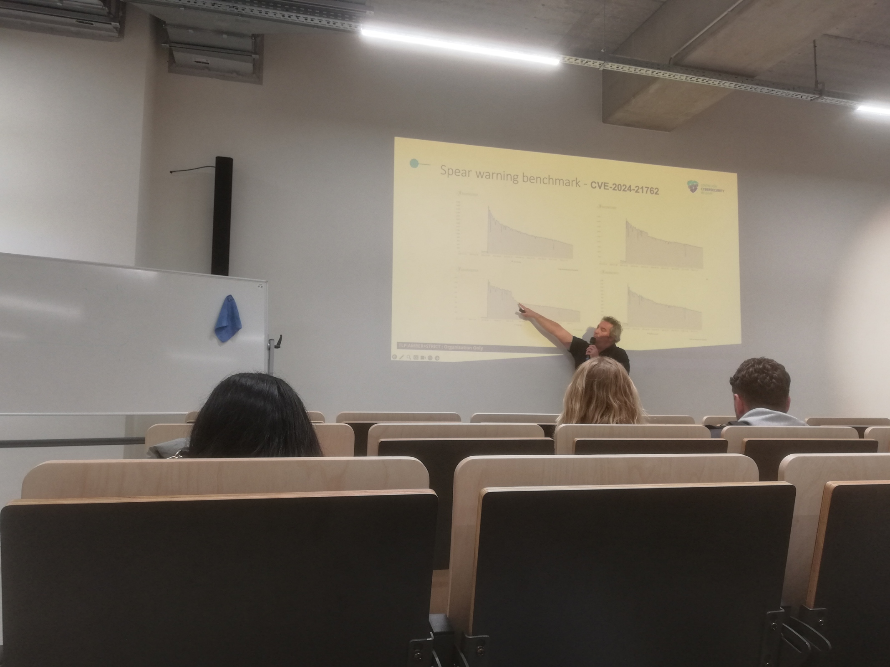
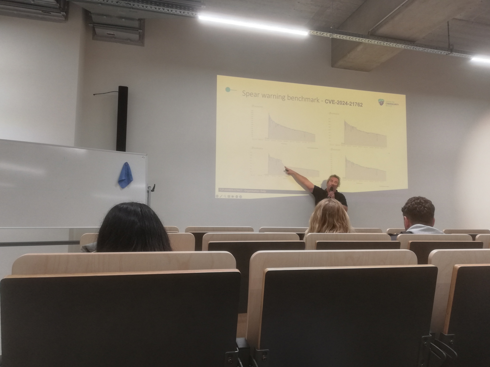

Gisteren mocht ik een fascinerende Tech&Meet sessie bijwonen over Cyber Threat Intelligence (CTI) aan Howest Brugge. Onder de titel "From Threats to Tactics" kregen we een unieke inkijk in hoe organisaties zich kunnen wapenen tegen moderne digitale dreigingen.
De sprekers van dienst waren Sandro Manzo (Lead of the Fusion Centre) en Niels Desloover (CTI Analyst). Beiden zijn werkzaam bij CyTRIS, de technische divisie van het Centrum voor Cybersecurity België (CCB). Hun missie was duidelijk: CTI demystificeren en omzetten in actie.
Van Dreigingen naar Tactieken
De sessie focuste op de overgang van het louter identificeren van 'threats' naar het effectief implementeren van 'tactics'. Het was interessant om te horen dat deze avond diende als een laagdrempelige introductie op een meer intensieve Masterclass. Het doel? Organisaties helpen om niet alleen reactief, maar ook proactief te handelen door gebruik te maken van gedeelde intelligence.
AI en de Evolutie van Phishing
Als AI-student was het een krachtige reminder dat de opkomst van Large Language Models (LLMs) het speelveld heeft veranderd. Dreigingen zoals phishing zijn veel moeilijker te detecteren geworden; de klassieke, overduidelijke vertaalfouten in het Nederlands verdwijnen razendsnel door het gebruik van generatieve AI. Dit maakt het werk van CyTRIS — het analyseren van deze opkomende dreigingen en ze vertalen naar hapklare info voor Belgische bedrijven — belangrijker dan ooit.
Het was indrukwekkend om te zien hoe België, via het CCB, een voortrekkersrol speelt in Europa op het gebied van informatie-uitwisseling en digitale verdediging.




Blijf Alert
Een belangrijke tip voor iedereen die de sessie niet kon bijwonen: zie je een verdacht bericht (e-mail, SMS, etc.)? Stuur het dan onmiddellijk door naar verdacht@safeonweb.be! Op die manier help je niet alleen jezelf, maar draag je ook bij aan de collectieve veiligheid in België.
Bekijk ook mijn originele post en de discussie op LinkedIn:
Bekijk op LinkedIn